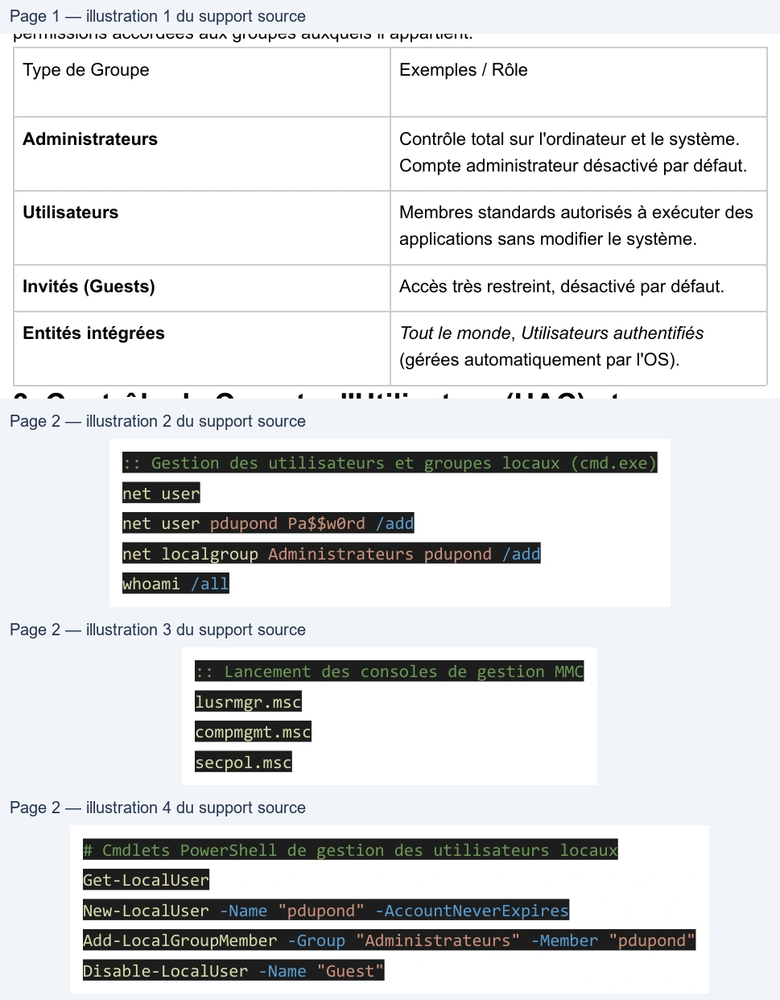

Transcription du document du Drive TSSR. La mise en forme est adaptée au Web ; les compléments IA du portail sont présentés séparément.
Dans Windows 10, chaque collaborateur est identifié par un compte d'utilisateur associé à un
identifiant de sécurité unique (SID - Security Identifier).
● Utilisateur Local : Enregistré dans la base de données locale SAM (Security Account
Manager) du poste.
● Utilisateur de Domaine : Enregistré dans l'annuaire Active Directory pour un accès
centralisé.
● Profil Utilisateur : Dossier personnel stocké dans C:\Users\<nom> contenant les
paramètres et documents de l'utilisateur. La gestion des profils se fait via sysdm.cpl.
Les groupes permettent de simplifier l'attribution des droits et privilèges. Un utilisateur hérite des
permissions accordées aux groupes auxquels il appartient.
Type de Groupe
Exemples / Rôle
Administrateurs
Contrôle total sur l'ordinateur et le système.
Compte administrateur désactivé par défaut.
Utilisateurs
Membres standards autorisés à exécuter des
applications sans modifier le système.
Invités (Guests)
Accès très restreint, désactivé par défaut.
Entités intégrées
Tout le monde, Utilisateurs authentifiés
(gérées automatiquement par l'OS).
L'UAC (User Account Control) empêche les modifications système non autorisées en imposant
| Type de Groupe | Exemples / Rôle |
| Administrateurs | Contrôle total sur l'ordinateur et le système . Compte administrateur désactivé par défaut . |
| Utilisateurs | Membres standards autorisés à exécuter des applications sans modifier le système . |
| Invités (Guests) | Accès très restreint désactivé par défaut , . |
| Entités intégrées | Tout le monde Utilisateurs authentifiés , (gérées automatiquement par l'OS) . |
une confirmation ou une saisie de mot de passe administrateur (élévation de privilèges
symbolisée par le bouclier).
Commandes de Gestion CLI et PowerShell
:: Gestion des utilisateurs et groupes locaux (cmd.exe)
net user
net user pdupond Pa$$w0rd /add
net localgroup Administrateurs pdupond /add
whoami /all
:: Lancement des consoles de gestion MMC
lusrmgr.msc
compmgmt.msc
secpol.msc
# Cmdlets PowerShell de gestion des utilisateurs locaux
Get-LocalUser
New-LocalUser -Name "pdupond" -AccountNeverExpires
Add-LocalGroupMember -Group "Administrateurs" -Member "pdupond"
Disable-LocalUser -Name "Guest"
